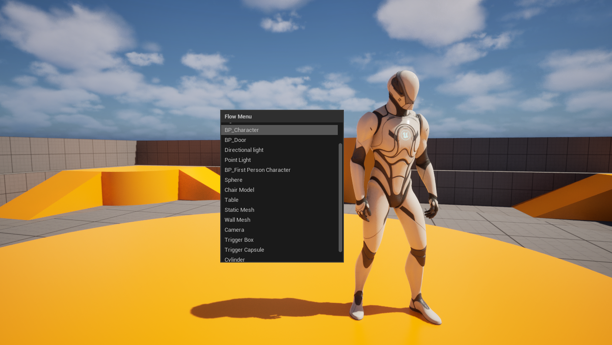

Overview
Flow Menu adds an elegant, lightning-fast quick-add popup directly to the Unreal Engine Level Viewport. It allows world artists, level designers, and developers to easily spawn commonly used items instantly without interrupting their viewport workflow or searching through the Content Browser.
| Specification | Details |
|---|---|
| Plugin Name | Flow Menu |
| Category | Editor Utility / Quality of Life |
| Supported Asset Types | Actor classes, Actor Blueprint assets, static mesh assets, and lights |
| Primary Workflow | Open popup with a shortcut, choose an item, then place it directly at the cursor in the viewport. |
Editor-Only Guardrail: Flow Menu is compiled strictly for editor modules. It will not package into your runtime games and will never impact your game's final shipping UI or size.
Key Features
Quick-Add Popup
Opens directly inside the Level Viewport contextually at your mouse pointer location.
Custom Shortcuts
Assign your preferred hotkeys smoothly through Unreal's standard Project Settings page.
Multi-Class Spawning
Seamless support for placing native classes, Blueprint Actors, custom lights, or static meshes.
Keyboard Navigation
Move quickly using arrow keys and press Enter to place, keeping your hands on input tools.
Deferred Placement Mode
Enabling click-to-place lets you select the item, inspect its proxy, and tap to drop in real-time.
Pre-configured Defaults
Ships with rich default options that can be edited, overwritten, or supplemented on a per-project basis.
Installation
Install Flow Menu as a global project plugin or distribute it as a localized plugin folder embedded with your production directory structure.
Copy Folder
Copy the Flow Menu source folder directly into your current Unreal project's Plugins directory.
Open Project
Launch the Unreal Engine 5 project in your targeted version.
Enable the Plugin
Navigate to Edit > Plugins. Search for "Flow Menu", and check the active box to enable it.
Restart the Editor
If prompted, click the restart button on the bottom right corner of the editor window to reload modules.
Basic Usage
Once installed, using Flow Menu takes less than a second during active level design runs:
- Open Level Viewport: Focus on any 3D level viewport within the editor.
- Call Shortcut: Click the pre-configured hotkey shortcut to open the Flow Menu immediately.
- Select Entry: Navigate choices with the mouse pointer or step list selections using the key arrow bindings and hit Enter.
- Placement Spawning: The selected actor will spawn right under the viewport mouse trajectory, or anchor with real-world clicks depending on the configuration.

📸 flow_menu_popup.pngPlace your level viewport screenshot here to display in-game popup examples.